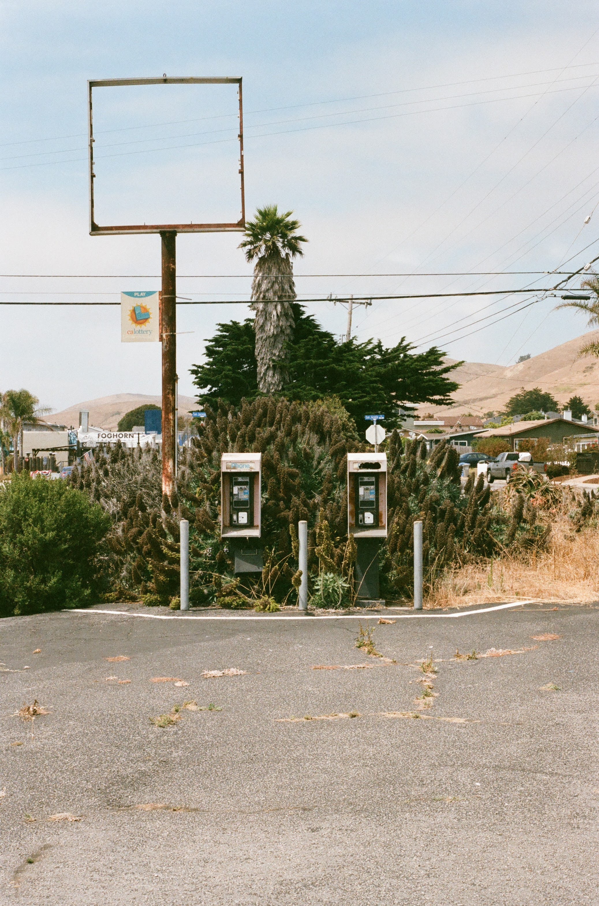

nik tesija
things I do
programming
I worked at Google on Search, making it a pretty website as a front end engineer. This website is my attempt to live life without Figma mocks or a javascript framework, everything is vanilla js.music
I make music under the name NNIK. It used to be Nautical Nik, but then someone said it sounded like I would be singing sea shanties (which would be cool but I don't). I like to make simple sounding songs that evoke the same feeling as using the spray can tool in MS Paint (they're ok). I hate my voice but I still sing.this is a page with more info about my music.
videos
I often walk around with my hi8 video camera and film random things. I try to capture the essence of old family videos.this is a page with more info about my videos.
stone sculptures
I recently started learning to sculpt stone. I'm still finding my style but enjoying the processthis is a page with more info about my sculptures. contians some nsfw images
photo
I take pictures on 35mm film cameras for fun. Mostly of my friends, but some times I take pictures of other things too.

This is a picture I took on film of some payphones near Morro Bay. Kinda cool and eerie to
see
that this stuff is still lying around. I had a realization recently that I don't think I
ever
actually used a pay phone as a kid.
 My parents visit me sometimes and I like to record those moments. Here is us having a
picnic in Napa. We ate a lot of bread and cheese and drank a lot of wine.
My parents visit me sometimes and I like to record those moments. Here is us having a
picnic in Napa. We ate a lot of bread and cheese and drank a lot of wine.